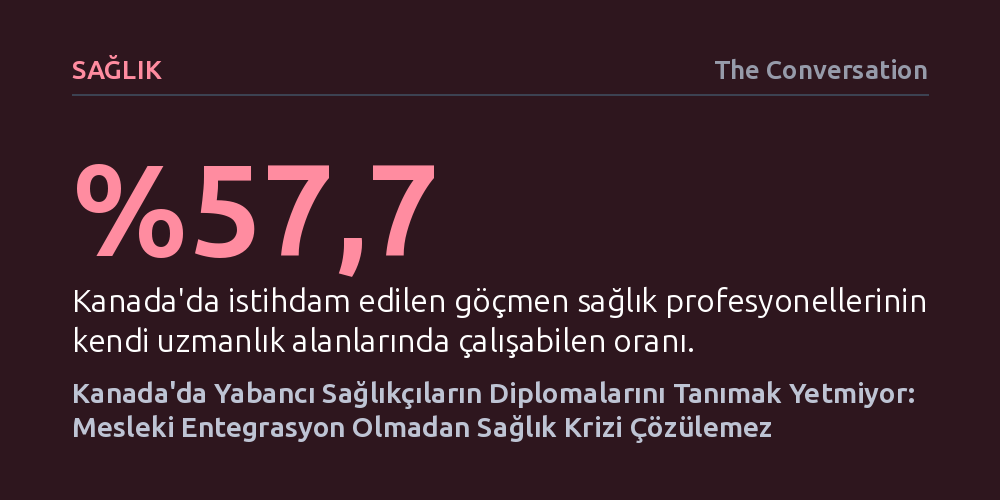

SAGLIK · The Conversation · 2026-10-07
Kanada'da istihdam edilen göçmen sağlıkçıların yalnızca yüzde 57,7'si kendi mesleğini yapabiliyor; diplomaları tanınsa bile çoğu uzman daha alt kademelere veya vasıfsız işlere kayıyor. Araştırma, diploma denkliğinin tek başına yetersiz kaldığını ve deneyimli göçmenlerin geride kalanlara Kanada'ya gitmeme tavsiyesi verdiğini gösteriyor.
Nitelikli göçmen kabul etmenin ve diploma denkliği vermenin sağlık krizini tek başına çözemeyeceğini, sistemli mesleki entegrasyon kurulmadıkça uzman emeğinin israf edildiğini gösteriyor.

Kanada, sağlık sektöründeki kronik personel açığını kapatabilmek amacıyla uzun süredir yurt dışından yetişmiş doktor ve hemşireleri ülkeye çekmeye çalışıyor. Federal hükümet son bütçesinde yabancı diplomaların tanınmasını hızlandırmak için beş yıl vadeli 97 milyon dolarlık bir eylem fonu ayırdı. Ancak sahadaki gerçekler, denklik süreçlerini hızlandırmanın meselenin yalnızca ilk ve en kolay adımı olduğunu gösteriyor. Bir uzmanın belgesinin yerel standartlara uygun bulunması, o kişinin ertesi gün ameliyathanede veya hasta başında mesleğini icra edebileceği anlamına gelmiyor.
Resmi veriler, diploma tanımanın ötesindeki derin yapısal tıkanıklığı açıkça ortaya koyuyor. Kanada'da çalışan yabancı eğitimli sağlık personelinin yalnızca yüzde 57,7'si kendi meslek alanında istihdam edilebiliyor. Geriye kalan geniş kitle ise ya sağlık sektörü dışında çalışmak zorunda kalıyor ya da önceki mesleki deneyimlerinin çok altında, düşük vasıflı ara işlerde kaybolup gidiyor. Dolayısıyla denklik süreci kapıyı aralasa bile, o kapıdan geçtikten sonra kariyeri sürdürebilmek bambaşka engellerle dolu bir mücadeleye dönüşüyor.
İş gücü piyasası ve göç araştırmacısı olan yazarın Toronto, Lagos ve İbadan'da yürüttüğü saha çalışması, göçmen sağlıkçıların Kanada'daki zorlu serüvenini somutlaştırıyor. Görüşülen yabancı uzmanların önemli bir kısmı, lisans alma süreçlerinin karmaşıklığı ve yüksek maliyeti nedeniyle mesleklerini terk etmek veya sil baştan eğitime başlamak zorunda kalmış. Örneğin Nijerya'da tıp doktoru olarak çalışan bir katılımcı, Kanada'ya geldikten sonra hekimlik ruhsatı almanın zorluğunu görerek ailesini geçindirebilmek için pratik hemşirelik programına geçiş yaptığını anlatıyor.
Benzer bir tablo hemşirelerde de tekrarlanıyor. Ülkesinde hemşirelik diploması olan bir uzman, belgesi Kanada'da lisans derecesine denk sayılmadığı için kişisel destek görevlisi olarak hasta bakıcılık yapmak zorunda kalıyor. Bu deneyimler, diploma denkliği ile mesleki entegrasyon arasındaki kritik farkı gösteriyor: Bir uzmanın belgesini onaylamak yalnızca idari bir filtre işlevi görüyor; o uzmanın önceki bilgi ve tecrübesini fiilen kullanabileceği çalışma koşullarını yaratmak ise çok daha kapsamlı bir entegrasyon mekanizması gerektiriyor.
Araştırmanın en çarpıcı bulgusu, Kanada'ya yerleşen sağlık çalışanlarının ülkelerindeki meslektaşlarına verdikleri tavsiyelerde ortaya çıkıyor. Katılımcıların dörtte üçü, memleketlerindeki akraba ve meslektaşlarının kendilerinden göç tavsiyesi istediğini belirtiyor. Ancak bu deneyimli göçmenlerin verdiği yanıtlar, tanıtım broşürlerindeki vaatlerin aksine son derece temkinli ve caydırıcı nitelikte.
Göçmenler, yaşadıkları ruhsat engellerini ve finansal darboğazları süzerek memleketlerindekilere adeta ulusötesi bir bilgi süzgeci işlevi görüyor. Katılımcılardan biri, Nijerya'da geçimini sağlayan bir işi olan hiç kimseye Kanada'ya göçmeyi tavsiye etmediğini açıkça dile getirirken, bir diğeri mevcut işi bırakmadan önce ülkeye turist olarak gelip tabloyu yerinde görmeyi öneriyor. Buna karşılık Nijerya'daki katılımcıların yüzde 81'i göç etmek istediğini ve bunların yüzde 61'i Kanada'yı hedeflediğini söylese de, sadece yüzde 39'unun göç etmiş bir meslektaşından doğrudan bilgi almış olması hayal ile gerçek arasındaki makası açıklıyor.
Sorunun kalıcı çözülememesinin altında Kanada'nın idari yönetim yapısındaki parçalanmışlık yatıyor. Göçmen seçimini ve fon aktarımını federal hükümet yürütürken; sağlık sisteminin idaresi, mesleki lisanslama ve düzenleyici kurumların denetimi eyaletlerin yetki alanında bulunuyor. Sağlık politikaları bu iki katman arasında sıkışıp kalıyor; federal düzeyde ülkeye davet edilen bir uzman, eyalet düzeyinde katı ve birbiriyle eşgüdümsüz ruhsat barajlarıyla baş başa bırakılıyor.
Yazar, çözümün yalnızca bürokratik belge onayını hızlandırmak olmadığını vurguluyor. Eyaletlerin gözetimli klinik staj, mentörlük, köprü kadrolar ve adayın geçmiş klinik deneyimini ölçen yetkinlik temelli geçiş modellerini yaygınlaştırması gerekiyor. Kanada'nın yabancı sağlıkçıları davet ederken verdiği "uzmanlığınıza ihtiyacımız var" taahhüdü, kişiye kalıcı oturum verildiği gün sona ermemeli; o uzmanın kendi mesleğinde güvenle hizmet verebilmesini sağlayacak bir kariyer köprüsüyle tamamlanmalıdır.